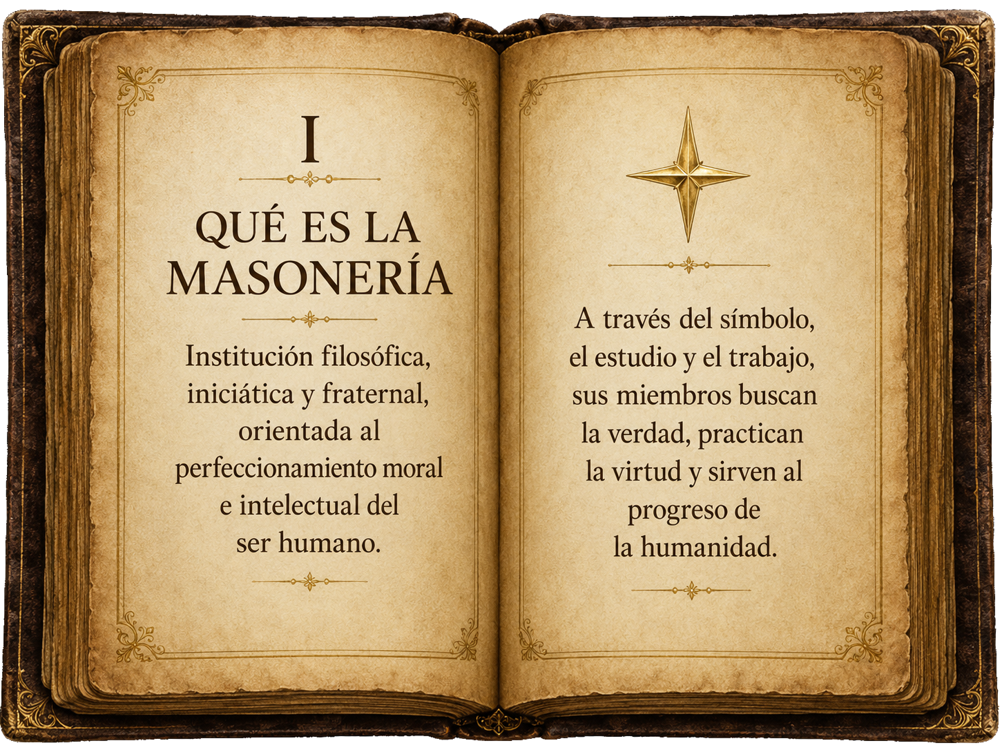

Libertad
El pensamiento libre es la primera piedra del hombre que trabaja en sí mismo.
Click · tecla · toque para continuar
Respetable Logia Simbólica del Oriente de Barquisimeto.
Un recinto de estudio, fraternidad y trabajo interior,
donde la piedra bruta se labra con paciencia.
A la Respetable Logia Teófilo Leal N° 115, un espacio dedicado al estudio, la formación moral y la fraternidad universal.
La fraternidad une lo que el ego separa.
El pensamiento libre es la primera piedra del hombre que trabaja en sí mismo.
Ante la verdad, todos los hombres son iguales sin distinción de origen ni nombre.
El trabajo compartido une lo que la diferencia separa y edifica lo perdurable.
Tres pilares que sostienen nuestra historia, nuestro propósito y
el legado de quienes nos precedieron.

I · Qué es la Masonería
La masonería es una institución filosófica, iniciática y fraternal que busca el perfeccionamiento moral e intelectual del ser humano. Promueve valores universales como la verdad, la justicia, la libertad, la igualdad y la fraternidad.
A través del estudio simbólico y el trabajo ritual, sus miembros buscan el conocimiento de sí mismos y contribuyen al progreso de la sociedad mediante la rectitud moral y el compromiso comunitario.

II · Historia de la Logia
Somos la Respetable Logia Teófilo Leal Nº 115, una institución fundada con el propósito de promover el crecimiento espiritual, moral e intelectual de nuestros miembros. Nos ubicamos en el Oriente de Barquisimeto, bajo los principios de fraternidad, discreción y compromiso social.
Nuestra logia es un espacio de encuentro donde hombres de bien trabajan conjuntamente por el perfeccionamiento personal y el beneficio de la humanidad.

III · Teófilo Leal
Teófilo Leal fue un venezolano cuya vida encarnó los principios que esta Logia lleva en su nombre. Hombre de pensamiento claro y acción consecuente, dejó una huella que sus hermanos decidieron perpetuar.
Su memoria vive en cada trabajo que se realiza dentro de esta institución, en cada hermano que honra su nombre con rectitud y servicio.
Leer reseña histórica →Éstos tres pilares —conocimiento, historia y ejemplo— nos guían en nuestro trabajo diario y nos recuerdan que la masonería es, ante todo, un camino de virtud y servicio.
La verdad es el norte del hombre que no se conforma.
El trabajo sobre uno mismo es la obra que nunca termina.
Lo que nos une es más fuerte que lo que nos separa.
Quien tolera la diferencia aprende la lección más difícil.
La perfección no es un destino, es la dirección del viaje.
Servir al prójimo es la más alta expresión de la libertad.
Si algo de lo que has recorrido hoy resuena en ti,
ya sabes dónde está la puerta.
La decisión es tuya. El umbral, nuestro.